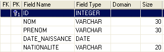
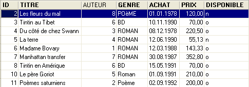
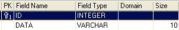
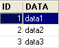

5. Relations entre tables
5.1. Les clés étrangères
Une base de données relationnelle est un ensemble de tables liées entre-elles par des relations. Prenons un exemple inspiré de la table [BIBLIO] précédente dont la structure était la suivante :

Un exemple de contenu était le suivant :

On pourrait vouloir des informations sur les différents auteurs de ces ouvrages par exemple ses nom et prénom, sa date de naissance, sa nationalité. Créons une telle table. Cliquons droit sur [DBBIBLIO / Tables] puis prenons l'option [New Table] :

Construisons maintenant la table [AUTEURS] suivante :
 |  |
clé primaire de la table - sert à identifier une ligne de façon unique | |
nom de l'auteur | |
prénom de l'auteur s'il en a un | |
sa date de naissance | |
son pays d'origine |
Le contenu de la table [AUTEURS] pourrait être le suivant :

Revenons à la table [BIBLIO] et à son contenu :
Dans la rubrique [AUTEUR] de la table, il devient inutile de mettre le nom de l'auteur. Il est plutôt préférable de mettre le n° (id) qu'il a dans la table [AUTEURS]. Créons donc une nouvelle table appelée [LIVRES]. Pour la créer, nous allons utiliser le script [biblio.sql] créé au paragraphe 3.14 Nous chargeons ce script avec l'outil [Script Executive, Ctrl-F12] :

Nous modifions le script de création de la table BIBLIO pour l'adapter à celui de la table LIVRES :
Nous ne commentons que les changements :
- ligne 4 : la rubrique [AUTEUR] de la table devient un numéro entier. Ce numéro référence l'un des auteurs de la table [AUTEURS] construite précédemment.
- lignes 11-19 : les noms des auteurs ont été remplacés par leurs numéros d'auteur.
- ligne 29 : le nom de la contrainte a été changée. Elle s'appelait auparavant [ UNQ1_BIBLIO ]. Elle s'appelle désormais [ UNQ1_LIVRES ]. Ce nom peut être quelconque. Il est préférable cependant qu'il ait un sens. Ici cet effort n'a pas été fait. Les contraintes sur les différents champs, les différentes tables d'une base doivent être différenciées par des noms différents. Rappelons que la contrainte de la ligne 29 demande qu'un titre soit unique dans la table.
- ligne 36 : changement du nom de la contrainte sur la clé primaire ID.
Exécutons ce script. S'il réussit, nous obtenons la nouvelle table [LIVRES] suivante :
 |  |
On peut se demander si finalement nous avons gagné au change. En effet, la table [LIVRES] présente des n°s d'auteurs au lieu de leurs noms. Comme il y a des milliers d'auteurs, le lien entre un livre et son auteur semble difficile à faire. Heureusement le langage SQL est là pour nous aider. Il nous permet d'interroger plusieurs tables en même temps. Pour l'exemple, nous présentons la requête SQL qui nous permet d'obtenir les titres des livres de la bibliothèque, associés aux informations de leurs auteurs. Utilisons l'éditeur SQL (F12) pour émettre l'ordre SQL suivant :
SQL> select LIVRES.titre, AUTEURS.nom, AUTEURS.prenom,AUTEURS.date_naissance
FROM LIVRES inner join AUTEURS on LIVRES.AUTEUR=AUTEURS.ID
ORDER BY AUTEURS.nom asc
Il est trop tôt pour expliquer cet ordre SQL. Nous reviendrons dessus prochainement. Le résultat de cette requête est le suivant :

Chaque livre a été associé correctement à son auteur et aux informations qui lui sont liées.
Résumons ce que nous venons de faire :
- nous avons deux tables rassemblant des informations de nature différente :
- la table AUTEURS rassemble des informations sur les auteurs
- la table LIVRES rassemble des informations sur les livres achetés par la bibliothèque
- ces tables sont liées entre-elles. Un livre a forcément un auteur. Il peut même en avoir plusieurs. Ce cas n'a pas été pris en compte ici. La rubrique [AUTEUR] de la table [LIVRES] référence une ligne de la table [AUTEURS]. On appelle cela une relation.
La relation qui lie la table [LIVRES] à la table [AUTEURS] est en fait une forme de contrainte : une ligne de la table [LIVRES] doit toujours avoir un n° d'auteur qui existe dans la table [AUTEURS]. Si une ligne de [LIVRES] avait un n° d'auteur qui n'existe pas dans la table [AUTEURS], on serait dans une situation anormale où on ne serait pas capable de retrouver l'auteur d'un livre.
Le SGBD est capable de vérifier que cette contrainte est toujours vérifiée. Pour cela, nous allons ajouter une contrainte à la table [LIVRES] :
 |  |  |
Le lien qui unit la rubrique [AUTEUR] de la table [LIVRES] au champ [ID] de la table [AUTEURS] s'appelle un lien de clé étangère. La rubrique [AUTEUR] de la table [LIVRES] est appelée "clé étrangère" ou "foreign key" dans l'assistant ci-dessus. Définir une clé étrangère, c'est dire que la valeur d'une colonne [c1] d'une table [T1] doit exister dans la colonne [c2] de la table [T2]. La colonne [c1] est dite "clé étrangère" de la table T1 sur la colonne [c2] de la table [T2]. La colonne [c2] est souvent clé primaire de la table [T2], mais ce n'est pas obligatoire.
Nous définissons la clé étrangère [AUTEUR] de la table [LIVRES] sur le champ [ID] de la table [AUTEURS] de la façon suivante :
 |
- nom de la contrainte : libre
- colonne "clé étrangère", ici la colonne [AUTEUR] de la table [LIVRES]
- table référencée par la clé étangère. Ici la colonne [AUTEUR] de la table [LIVRES] doit avoir une valeur dans la colonne [ID] de la table [AUTEURS]. C'est donc la table [AUTEURS] qui est référencée.
- colonne référencée par la clé étangère. Ici la colonne [ID] de la table [AUTEURS].
Nous validons cette contrainte :

Si tout va bien, elle est acceptée :

Quelle est la conséquence de cette nouvelle contrainte de clé étrangère ? Avec l'éditeur SQL (F12), essayons d'insérer une ligne dans la table LIVRES avec un n° d'auteur inexistant :

L'opération [INSERT] ci-dessus a essayé d'insérer un livre avec un n° d'auteur (100) inexistant. L'exécution de la requête a échoué. Le message d'erreur associé indique qu'il y a eu violation de la contrainte de clé étrangère "FK_LIVRES_AUTEURS". C'est celle que nous venons de définir.
5.2. Opérations de jointures entre deux tables
Toujours dans la base [DBBIBLIO] (ou une autre base peu importe), créons deux tables de test appelées TA et TB et définies comme suit :
Table TA
 - ID : clé primaire de la table TA - DATA : une donnée quelconque |  |
Table TB
 - ID : clé primaire de la table TB - IDTA : clé étrangère de la table TB qui référence la colonne ID de la table TA. Ainsi une valeur de la colonne IDTA de la table TA doit exister dans la colonne ID de la table TA - VALEUR : une donnée quelconque |  |
Dans l'éditeur SQL (F12), nous allons émettre des ordres SQL exploitant simultanément les deux tables TA et TB.

L'odre SQL fait intervenir derrière le mot clé FROM, les deux tables TA et TB. L'opération FROM TA, TB va provoquer la création temporaire d'une nouvelle table dans laquelle chaque ligne de la table TA sera associée à chacune des lignes de la table TB. Ainsi si la table TA a NA lignes et la table TB a NB lignes, la table résultante aura NA x NB lignes. C'est ce que montre la copie d'écran ci-dessus. Par ailleurs, chaque ligne a les colonnes des deux tables. Les colonnes coli précisées dans l'ordre [SELECT col1, col2, ... FROM ...] indiquent celles qu'il faut retenir. Ici le mot clé * indique que toutes les colonnes de la table résultante sont demandées. On dit parfois que la table résultante de l'ordre SQL précédent est le produit cartésien des tables TA et TB.
Ci-dessus, chaque ligne de la table TA a été associée à chaque ligne de la table TB. En général on veut associer à une ligne de TA, les lignes de TB qui ont une relation avec elle. Cette relation prend souvent la forme d'une contrainte de clé étrangère. C'est le cas ici. A une ligne de la table TA, on peut associer les lignes de la table TB qui vérifient la relation TB.IDTA=TA.ID. Il y a plusieurs façons de demander cela :
L'ordre SQL précédent est analogue au précédent avec cependant deux différences :
- les lignes résultat du produit cartésien TA x TB sont filtrées par une clause WHERE qui associe à une ligne de la table TA, les seules lignes de la table TB qui vérifient la relation TB.IDTA=TA.ID
- on ne demande que certaines colonnes avec la syntaxe [T.col] où T est le nom d'une table et col le nom d'une colonne de cette table. Cette syntaxe permet de lever l'ambiguïté qui pourrait surgir si deux tables avaient des colonnes de même nom. Lorsque cette ambiguïté n'existe pas, on peut utiliser la syntaxe [col] sans préciser la table de cette colonne.
Le résultat obtenu est le suivant :

Le même résultat peut être obtenu avec l'ordre SQL suivant :
Du terme [inner join] vient le nom de "jointure interne" donné à ce type d'opérations entre deux tables. On verra qu'il existe une "jointure externe". Dans une jointure interne, l'ordre des tables dans la requête n'a pas de conséquences sur le résultat : FROM TA inner join TB est équivalent à FROM TB inner join TA.
L'ordre SQL précédent ne met dans la table résultante que les lignes de la table TA référencées par au moins une ligne de la table TB. Ainsi la ligne de TA [3, data3] n'apparaît pas dans le résultat car elle n'est pas référencée par une ligne de TB. On peut vouloir toutes les lignes de TA, qu'elles soient ou non référencées par une ligne de TB. On utilise alors une jointure externe entre les deux tables :

On a ici une jointure externe gauche "left outer join". Pour comprendre le terme "FROM TA left outer join TB", il faut imaginer une jointure avec la table TA à gauche et la table TB à droite. Toutes les lignes de la table de gauche se retrouvent dans le résultat d'une jointure externe gauche même celles pour qui la relation de jointure n'est pas vérifiée. Cette relation de jointure n'est pas forcément une contrainte de clé étrangère même si c'est néanmoins le cas le plus courant.
Dans l'ordre suivant :
c'est la table TB qui est à "gauche" dans la jointure externe. On retrouvera donc toutes les lignes de TB dans le résultat :

Contrairement à la jointure interne, l'ordre des tables a donc une importance. Il existe également des jointures externes droites :
- FROM TA left outer join TB est équivalent à FROM TB right outer join TA : la table TA est à gauche
- FROM TB left outer join TA est équivalent à FROM TA right outer join TB : la table TB est à gauche
Les bases de l'exploitation simultanée de plusieurs tables étant maintenant connues, nous pouvons aborder des opérations de consultation plus complexes sur les bases de données.